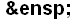
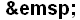

TAGS UTILIZADAS NÃO APRENDIDAS EM AULA E SUAS FUNCIONALIDADES
-
<link rel="shortcut icon" type="image/png" href="imagem.ico"/>
O elemento <link> é utilizado para vincular conteúdos de outros arquivos na
página de código HTML. Ele deve ser inserido entre as tags <head> </head> da
página.
O atributo rel define o relacionamento entre a página atual e o recurso vinculado.
O rel="shortcut icon" é o valor que define o ícone ou favicon da página da web que
representa visualmente o site.
A URL do ícone é especificada no atributo href.
A extensão “ico” contém um ícone, que normalmente é usado para um programa, arquivo
ou pasta.
(Fontes: Blog
Betrybe e Dofactory)
-
<style> a { text-decoration: none; } </style>
O elemento HTML <style> contém informações de estilo para um documento ou uma
parte do documento. As informações de estilo específico estão contidas dentro deste
elemento, geralmente no CSS. A propriedade text-decoration do CSS é usada para
definir a formatação de underline, overline, line-through ou blink. As decorações underline
e overline são posicionadas abaixo e acima do texto (respectivamente), e line-through
cortando-o. Quando utilizamos display: none, estamos dizendo que o elemento não deve
ser exibido na página, ou seja, ele fica invisível e não ocupa espaço.
(Fontes: Developer, Developer (text-decoration) e Maujor)
-
<div style="text-align:right"> </div>
A tag <div> é utilizada para agrupar e delimitar conteúdos e para isso esses
conteúdos devem ser declarados entre a tag de início e a tag de fechamento
(<div></div>).
(Fonte: DevMedia)
-
<iframe> </iframe>
É uma tag utilizada para inserir conteúdos externos em uma página.
(Fonte: RockContent)
-
<button> </button>
Criar um botão clicável, onde você pode colocar conteúdo, como texto ou imagens.
(Fonte: Homehost)
-
<blockquote> </blockquote>
O Elemento HTML <blockquote> (ou Elemento HTML de citação de bloco) indica que o texto
incluído é uma longa citação. Normalmente, este é processado visualmente pelo recuo. A URL
para a fonte da citação pode ser dada usando o atributo cite, enquanto uma representação de
texto da fonte pode ser dada usando o elemento cite. Um atributo de class
especifica características de um elemento HTML. Uma classe pode ser usada por um CSS ou
Javascript (através do Document Object Model, ou DOM) para realizar determinadas tarefas ou
atributos em um elemento com esta classe.
(Fonte: Developer e Portal
Desenvolvedor)
-
<section> </section>
A tag <section> é utilizada para marcar as seções de conteúdo de uma página.
Com esse elemento agrupamos de forma lógica nosso conteúdo, separando a informação em áreas
diferentes.
(Fonte: Portal Insights)
-
<label> </label>
A tag <label> é um elemento HTML que representa uma legenda para melhorar a
acessibilidade de um item de interface do usuário. Este elemento também é conhecido como
controle ou rótulo e pode ser associado a outro elemento de controle através de um
atributo.
(Fonte: DevMedia)
-
<input.../>
A tag <input> cria diferentes campos de entrada de dados no documento HTML. No
geral, <input> deve ser usada dentro da tag <form>, para que possa passar
os dados coletados para algum outro documento através dos processos nativos de
<form>.
(Fonte: Ranoya)
-
<textarea> </textarea>
Cria uma caixa de texto. Através da caixa de texto podemos permitir ao usuário digitar
textos maiores, como uma mensagem em um formulário de contato, por exemplo.
(Fonte: DevMedia)
ATRIBUTOS UTILIZADOS NÃO APRENDIDAS EM AULA E SUAS FUNCIONALIDADES
-
<a href="personagens.html" style="color:#3437f7" target="_self">
</a>
O atributo style serve para definir o modelo e cor do texto, no trabalho foi utilizado o
style="color" para definir a cor do texto no link.
(Fonte: StackOverflow)
-
<div style=" "> </div>
Para definir o modelo de estilização da tag <div>.
(Fonte: Dofactory)
-
position:
Para definir a posição do elemento. Foram utilizados position:relative que posiciona
o elemento em relação a si mesmo, e position:absolute que faz o elemento ter sua
posição relacionada à de seu elemento pai.
(Fonte: Developer (position))
-
padding-bottom
Define as dimensões do espaçamento interno inferior (distância do elemento para sua própria
borda).
(Fonte: Ranoya)
-
overflow
Especifica quando o conteúdo de um elemento deve ser cortado, exibido com barras de rolagem
ou se transborda do elemento.
(Fonte: Developer (overflow))
-
hidden
Torna o elemento oculto para os mecanismos de pesquisa tornando-o invisível.
(Fonte: Semrush)
-
frameborder
É usado para especificar se uma borda deve ou não ser exibida entre os frames, utilizando
dois valores: 0 e 1.
(Fonte: Portal Insights)
-
allowfullscreen
Este atributo dá a permissão de utilizar o <iframe> em tela cheia.
(Fonte: Blog
Betrybe)
-
allow
Permite ativar ou desativar um recurso.
(Fonte: Developer)
-
autoplay
Permite que o conteúdo seja inicializado sem a necessidade de clicar em play ou no
elemento.
(Fonte: DevMedia)
-
<font face=" "> </font>
Para alterar o tipo de fonte.
(Fonte: HTML Progressivo)
-
<font size=" "> </font>
Para alterar o tamanho da fonte.
(Fonte: HTML Progressivo)
-
<font color=" "> </font>
Para alterar a cor da fonte.
(Fonte: HTML Progressivo)
-
valign
Indica o alinhamento vertical dentro das células de uma linha. Pode ser superior
valign="top", ou inferior valign="bottom".
(Fonte: Fundação Bradesco)
-
loading="lazy"
Pode ser usado para instruir o navegador a adiar o carregamento de imagens/iframes que estão
fora da tela até que o usuário role perto deles. Isso permite carregar recursos não críticos
somente se necessário.
(Fonte: Developer)
-
referrerpolicy="no-referrer-when-downgrade"
O atributo referrerpolicy HTML especifica a quantidade de informações de referência que
seriam enviadas ao servidor. O valor no-referrer-when-downgrade indica que o
cabeçalho de referência não será enviado às origens sem HTTPS.
(Fonte: Acervo Lima)
-
placeholder
O placeholder insere, dentro do input, um texto temporário que será apagado quando o
usuário começar a digitar no campo.
(Fonte: DevMedia)
-
required
Quando presente, especifica que um campo de entrada deve ser obrigatoriamente preenchido
antes do envio do formulário.
(Fonte: W3Schools)
-
onclick
O evento onclick executa determinada funcionalidade programada quando um elemento
(como um botão) é clicado.
(Fonte: FreeCodeCamp)
-
transform: scale
Utilizado para redimensionar os elementos, tendo como escala padrão 1. Valores maiores que 1
aumentarão o tamanho do elemento, e valores menores diminuirão sua escala.
(Fonte: RedSpark)
-
::-webkit-scrollbar
O pseudoelemento webkit-scrollbar faz parte do CSS e serve para personalizar toda a barra de
rolagem de elementos e navegadores.
(Fonte: ISSO Marketing)
-
::-webkit-scrollbar-track
O webkit-scrollbar-track dá a opção de personalizar a faixa de fundo por onde a barra de
rolagem corre.
(Fonte: ISSO Marketing)
-
::-webkit-scrollbar-thumb
Com o webkit-scrollbar-thumb você tem a opção de personalizar a alça de rolagem arrastável
em si.
(Fonte: ISSO Marketing)
-

Utilizado para colocar dois espaços em branco consecutivos no texto HTML.
(Fonte: WikiHow)
-

Utilizado para colocar quatro espaços em branco consecutivos no texto HTML.
(Fonte: WikiHow)
-
Exibe os caracteres das tags como texto puro na tela sem que o navegador as interprete como
código executável.
(Fonte: Bruno.Art)
|